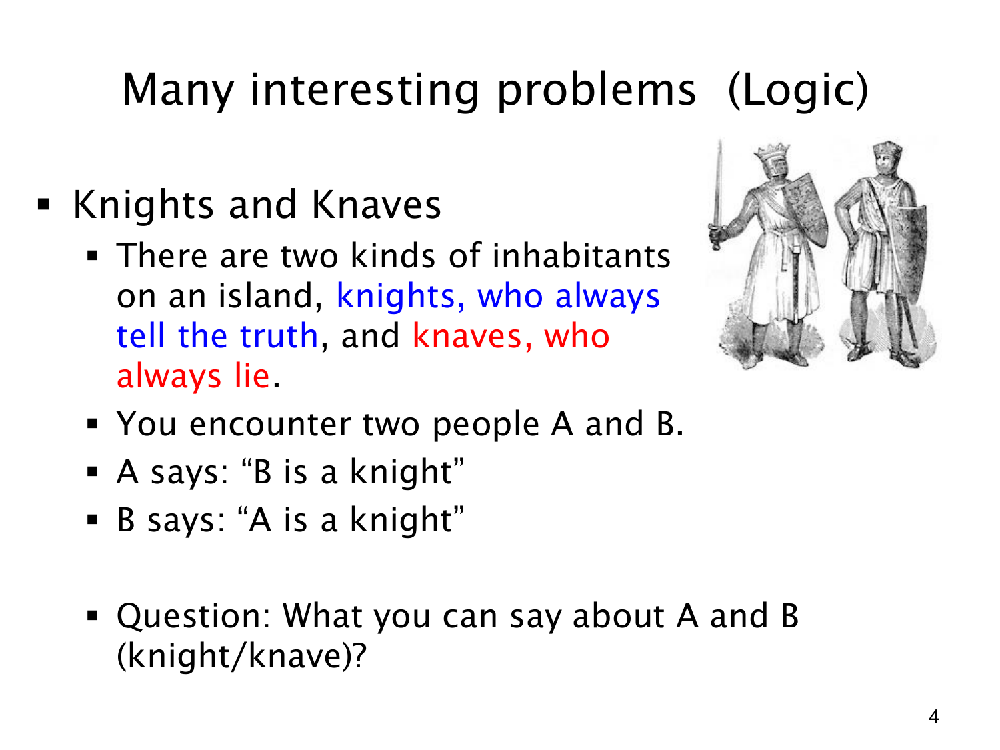

L1.1 · 第 4 页讲解原文
查看这一页课件

骑士与无赖：两人的身份能确定吗？
这道题把人的身份转成说话的真假：骑士（knight）永远说真话，无赖（knave）永远说假话。A 说“B 是骑士”，B 说“A 是骑士”。要判断身份，不能只看他们互相称赞，还要检查每种假设是否与说话规则一致。
设 P 表示“A 是骑士”，Q 表示“B 是骑士”。A 的话就是 Q；因为 A 是骑士当且仅当他的话为真，得到 P↔Q。B 的话是 P；同理得到 Q↔P。这两个条件实际上相同，只说明 A、B 的身份一致。
逐一检查可看到：
| A | B | 是否一致 | 理由 |
|---|---|---|---|
| 骑士 | 骑士 | 是 | 两人说的话都是真的。 |
| 无赖 | 无赖 | 是 | 两人说的话都是假的。 |
| 骑士 | 无赖 | 否 | A 会说出假话。 |
| 无赖 | 骑士 | 否 | A 会说出真话。 |
所以不能唯一确定谁是骑士；能够确定的是两人要么都是骑士，要么都是无赖。这展示了逻辑题的核心方法：把自然语言陈述转为明确条件，再排除与条件矛盾的情况。